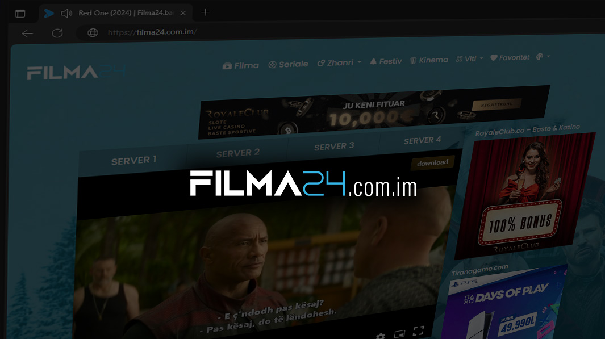

Filma24: Portali Juaj i Përsosur për Filma me Titra Shqip
Mirë se vini te Filma24, destinacioni kryesor për çdo adhurues të kinemasë me filma me titra shqip. Që nga hitet më të fundit të Hollywood-it e deri te klasikët e dashur, Filma24 ju ofron cilësi HD, titra të qartë dhe navigim intuitiv për një përvojë streaming pa stres.

Çfarë Është Filma24?
Filma24 është një platformë online navigational që ofron qasje të menjëhershme në mijëra filma me titra shqip. Qëllimi i saj është të sjellë kinemanë në ekranin tuaj, pa nevojën e abonimeve të shtrenjta apo reklama të tepruara. Përmes një ndërfaqeje të thjeshtë dhe të qartë, përdoruesit mund të kërkojnë nga titulli i filmave, aktorët e preferuar, apo edhe sipas zhanreve. Për më tepër, Filma24 përfshin variante të njohura si Filma247, Filma365, Kokoshka filma dhe Mistreci filma me titra shqip, duke u siguruar që nuk ju mungon asnjë premiere.
“Streaming pa stres është formula e suksesit – Filma24 e ka zbuluar sekretin.”
— Dr. Arben Leka, Analist Mediatik
Pse Filma24 Është Zgjedhja Ideale për Filma me Titra Shqip
- Faqe pa reklama të tepërta: Përqendrohuni tek filmi, jo tek dritaret e pop-up.
- Cilësi HD & 4K: Përjetoni çdo detaj artistik në nivel premium.
- Titra të qarta, të personalizueshme: Zgjidhni madhësinë, ngjyrën dhe vendndodhjen.
- Integrim i lehtë me pajisje mobile: Stream në telefon ose tablet pa mundim.
- Katalogu i përditësuar çdo javë: Nga blockbuster-at e fundit te klasikët e pa-vdekur.
- Mbështetje 24/7: Email, chat live dhe seksion FAQ.
Si të Përdorni Filma24: Udhëzues Hap-pas-Hapi
- Regjistrohu ose hyn në llogarinë tënde brenda 2 minutash.
- Kërko titullin ose përdor filtrat sipas zhanrit, vitit apo aktorit.
- Zgjidh cilësinë e streaming (HD, Full HD, 4K).
- Aktivizo titrat: Kliko ikonën “CC” dhe përshtat madhësinë.
- Shto në shënues për të ruajtur filmat që do shikosh më vonë.
- Përfito nga funksioni “Shih Ngjashëm” për rekomandime automatike.
- Shiko në pajisje të ndryshme – telefoni, tableti, smart TV.
Këshilla Shtesë për Integrim të Titrave
Nëse dëshironi titra më të vogla gjatë një skene aksioni, përdorni cilësimin “Minimal” për të mos humbur asnjë detaj vizual, ndërsa për dramat e ngarkuara emocionale, opsioni “Bold” ngre qartësinë.
“Kur filmi ka skena me atmosferë të fortë, titrat e saktë janë ura mes historisë dhe emocioneve – prandaj Filma24 i vendos në qendër.”
— Zoja Hoxha, Kritik Kinema
Karakteristikat Kryesore të Filma24
- Modaliteti “Dark Mode” për ambientet me dritë të dobët.
- Search intelligent që sugjeron tituj bazuar në historikun tuaj.
- Playlist privat: krijoni renditje personale për maratona filmash.
- Ndryshimi i cilësisë me një klik për lidhje të ndryshme interneti.
- Rekomandime sipas preferencave falë algoritmit të mësimit automatik.
Filma24 vs Konkurrentët: Një Krahasim i Shpejtë
| Platforma | Cilësia e Shfaqjes | Titra Shqip | Mbështetja Përdoruesit | Numri i Filmit |
|---|---|---|---|---|
| Filma24 | HD/4K | Po | Chat live, Email 24/7 | 5000+ |
| Filma365 | HD (720p) | Po | 3000+ | |
| Kokoshka filma | HD (1080p) | Po | Forum, Komente | 4000+ |
| Mistreci filma | HD/Full HD | Po | Email, Chat | 3500+ |
Tendencat dhe Preferencat e Shikimit në Filma24
Në 2025, ekomedia e filmave me titra shqip është karakterizuar nga një interes i lartë për serialet kriminale dhe dramën psikologjike. Gjatë stinëve të verës, titujt me aventurë dhe komeditë romantike shënojnë valë shikueshmërie, ndërsa në dimër kërkesa për filma familjarë dhe fantazi rritet ndjeshëm. Filma24 ofron playlist të sezonit për të ndjekur trendet:
- Verë 2025: “Aventurat Tropikale”
- Vjeshtë 2025: “Krimi në Qytetin Modern”
- Dimër 2025: “Fantazitë Dimërore”
“Analiza e të dhënave na tregon se komeditë familjare triumfojnë në ditët e pushimeve, prandaj kemi krijuar koleksione të veçanta për çdo festë.”
— Mentor Çafa, Specialist i Tendencave Dixhitale
Siguria dhe Ligjshmëria në Filma24
- SSL encryption dhe mbështetje e plotë ligjore për bibliotekën e filmave.
- Kontroll i rregullt i shkeljeve të licencave.
- Backup të përditshëm të serverave, për të mos humbur asnjë film.
- Politika e privatësisë e qartë, pa ndarje të të dhënave me palë të treta.
5W1H: Pyetje të Shpeshta për Filma24
Çfarë është Filma24?
Filma24 është një portal online ku mund të shikoni filma HD dhe 4K me titra shqip pa reklamime të ngatërruara, me akses të shpejtë dhe navigim intuitiv.
Pse të përdor Filma24 për filma me titra shqip?
Sepse ofron përditësime javore, cilësi premium, dhe titra të personalizueshme, duke e bërë çdo seancë shikimi të qetë dhe të këndshme.
Kur azhurnohet biblioteka në Filma24?
Përditësimet kryhen çdo të premte, me 10-15 tituj të rinj, duke përfshirë premiere botërore dhe tituj klasikë të kërkuar nga përdoruesit.
Si të zgjidh cilësinë e streaming në Filma24?
Në menu-në e cilësimeve të videove, kliko “Quality” dhe zgjidh midis HD, Full HD, apo 4K, në varësi të shpejtësisë së internetit tuaj.
Ku mund të gjej Filma247, Filma365 ose Kokoshka filma me titra shqip?
Edhe pse janë platforma të ndryshme, ato ofrojnë përvojë të ngjashme; Filma24 përqendrohet në cilësi, shpejtësi dhe mbështetje optimale për përdoruesit.
Këshilla për Eksperiencën më të Mirë në Filma24
- Përdorni kufje cilësore për tingull më të pasur.
- Aktivizoni modalitetin “Dark Mode” kur shikoni në mbrëmje.
- Përfitoni nga rekomandimet sipas historikut tuaj për të zbuluar gjëra të reja.
- Shmangni buffering-un duke mbyllur aplikacionet e tjera intensive në internet.
- Ndani listën tuaj të filmave me miqtë për diskutime të gjalla pas seancave.
Konkluzioni
Filma24 e ka revolucionarizuar mënyrën se si shikojmë filmat me titra shqip, duke ofruar kombinimin perfekt mes cilësisë, bibliotekës së pasur dhe navigimit intuitiv. Pavarësisht nëse jeni çun i aksionit, adhurues i dramës apo familjar kërkues, Filma24 ka diçka për çdo shije. Provoni tani, shtoni në shënues dhe nisni një maratonë të papërsëritshme dixhitale!